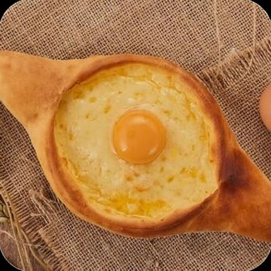
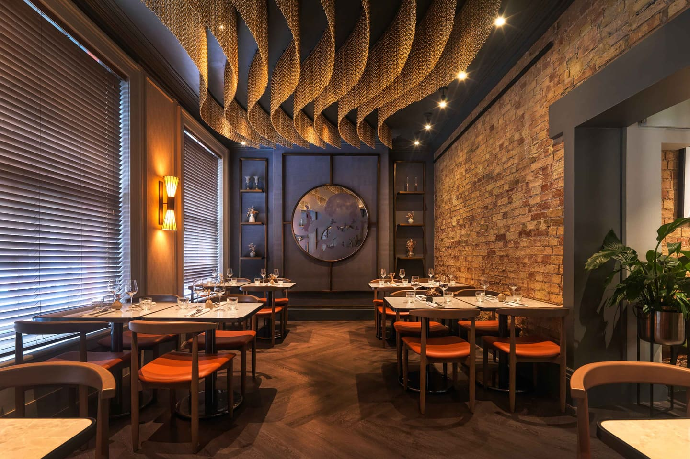
Ресторан северной кухни
Форель, огонь
и тишина
Рыба с холодных горных рек, открытый угольный под и ужины, которые некуда торопить. Четыре зала, сезонное меню, своя коптильня.
О ресторане
Мы готовим то,
что поймали утром
«Форель не терпит спешки — ни в реке, ни на кухне».
Re Forel вырос из маленькой коптильни при форелевом хозяйстве. Мы возим рыбу с трёх горных ферм, где вода не поднимается выше девяти градусов, и разбираем её здесь же, на кухне, — каждое утро, при гостях.
Огонь у нас один на весь зал: угольный под, ольха и виноградная лоза. Всё остальное — соль, лимон, сливочное масло и терпение. Мы не прячем рыбу под соусами и не подаём то, чего не поймали на этой неделе.
Меню меняется четыре раза в год, а карта вин — когда находим что-то, что стоит того. Спрашивайте у официанта: он пробовал всё.
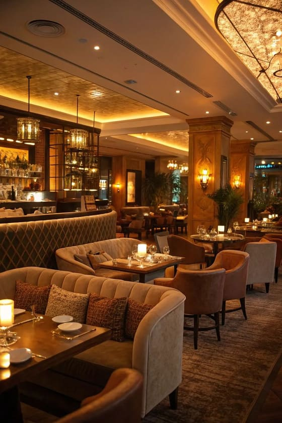
Атмосфера
Интерьер, в котором
хочется остаться дольше
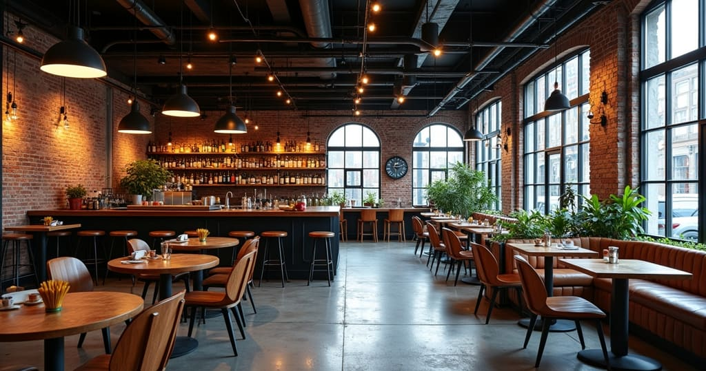
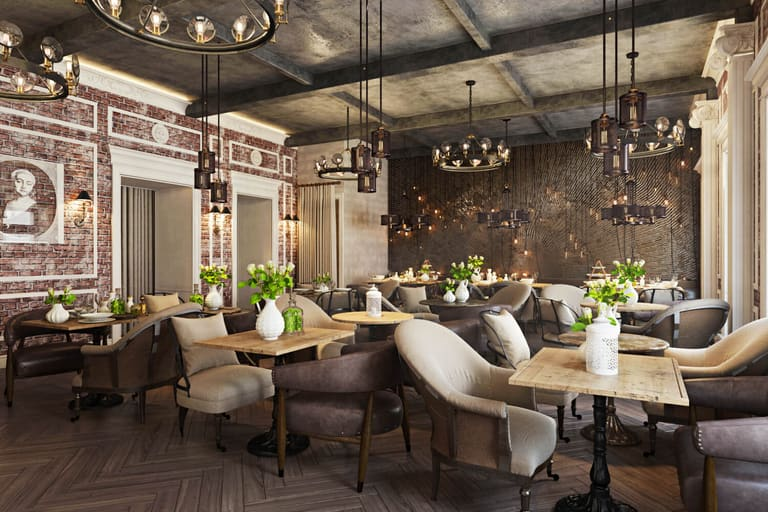
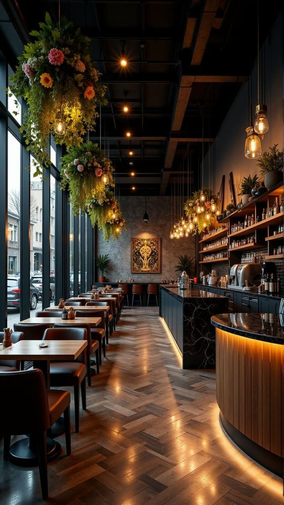
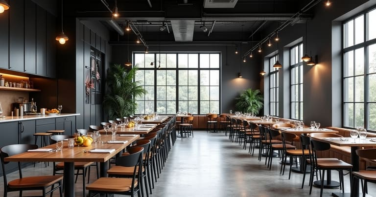
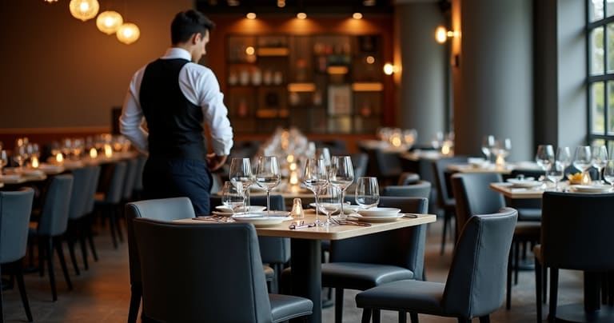
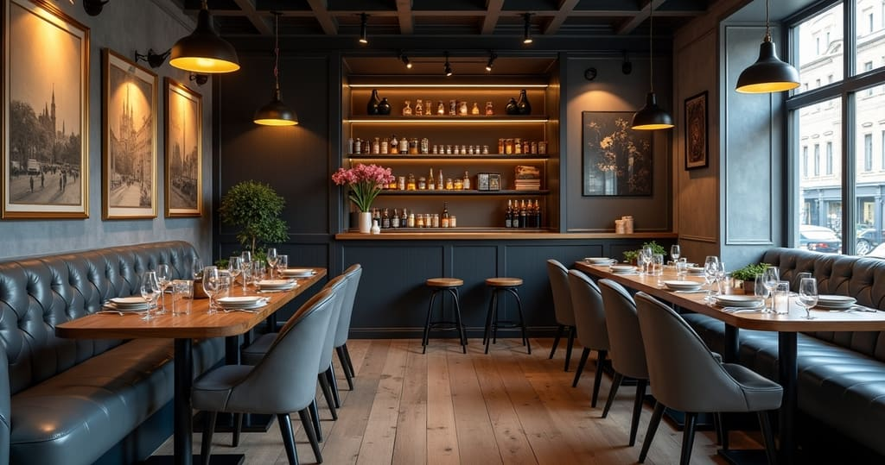
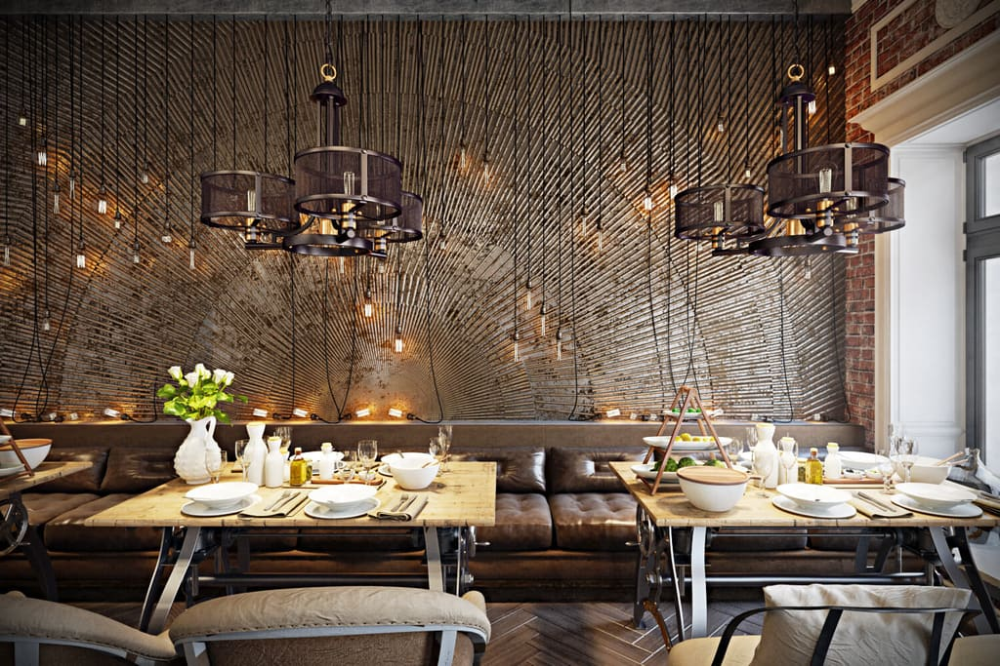
Пространства
Четыре зала — четыре разных вечера
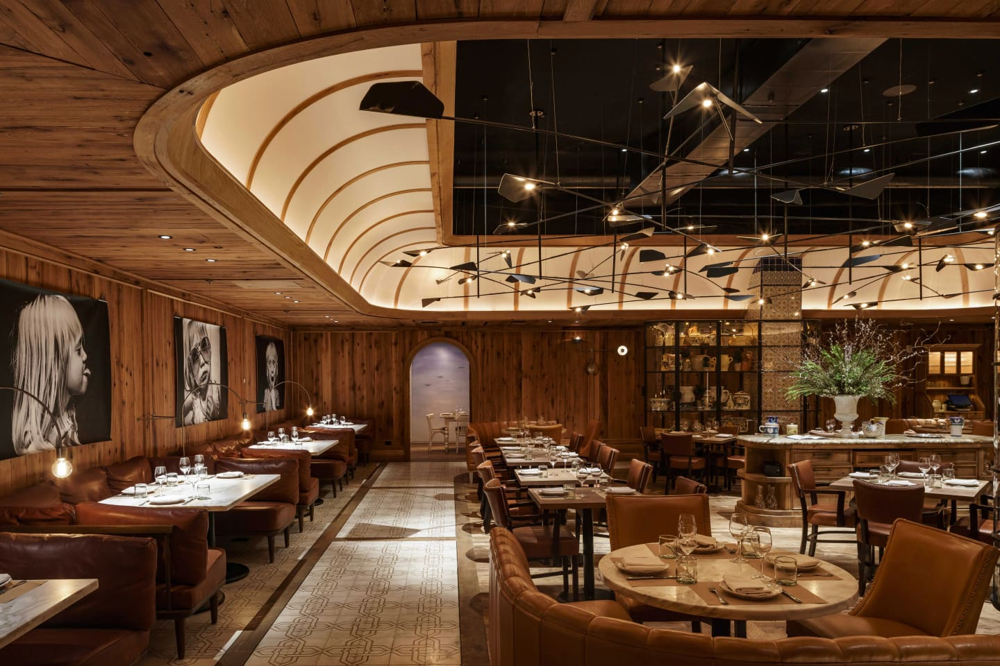
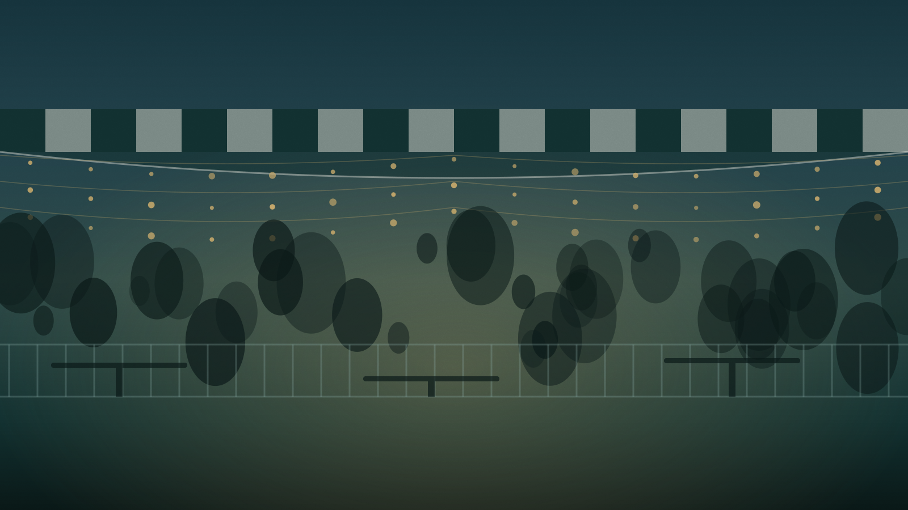
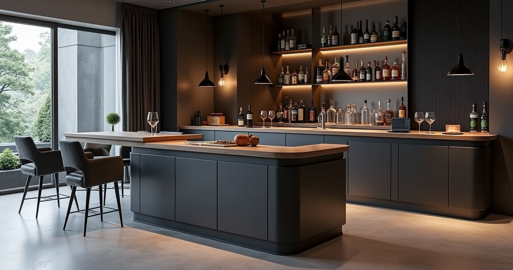
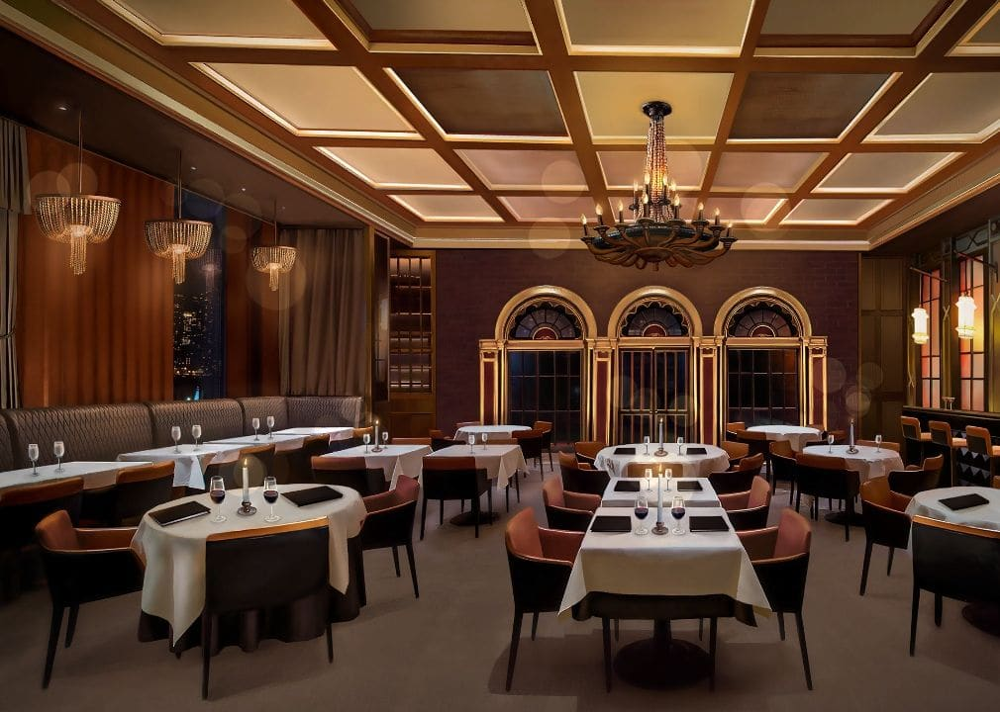
Зал
Сердце ресторана: дубовые панели, открытая кухня и вид на угольный под. Здесь слышно, как работает огонь.
- Посадка
- 64 гостя
- Площадь
- 180 м²
Терраса
Открыта с мая по октябрь. Под маркизой, с гирляндами и пледами на прохладные вечера. Отсюда видно реку.
- Посадка
- 36 гостей
- Сезон
- Май — октябрь
Бар
Двенадцать мест у стойки, настойки на ольхе и можжевельнике, короткое барное меню до последнего гостя.
- Посадка
- 12 мест
- До
- 02:00
Банкетный зал
Отдельный вход, своя гардеробная и проектор. Сет-меню согласуем за неделю, кухня работает только на вас.
- Посадка
- 40 гостей
- Площадь
- 95 м²
Меню
Хачапури, хинкали
и всё, что с мангала
Хачапури
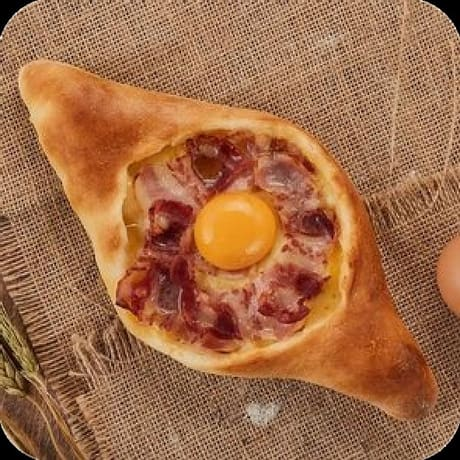
Хачапури по-аджарски с беконом
460 ₽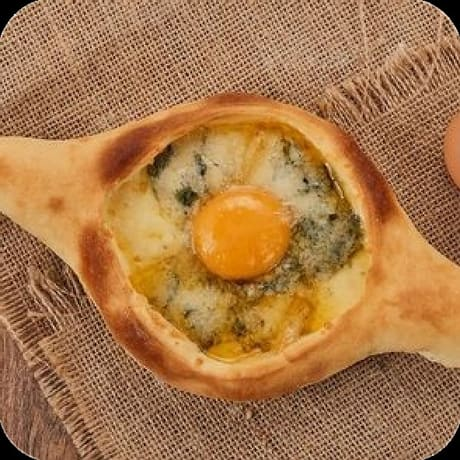
Хачапури с мраморной горгонзолой
520 ₽
Хачапури с грушей и сыром Горгонзола
530 ₽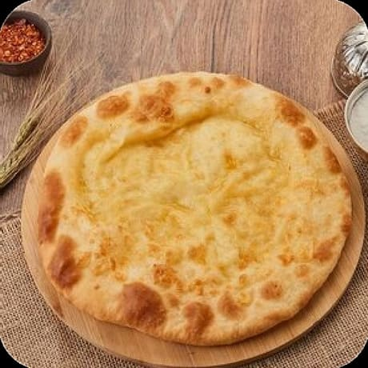
Хачапури по-имеретински
500 ₽
Хачапури по-мегрельски с копчёным сулугуни
530 ₽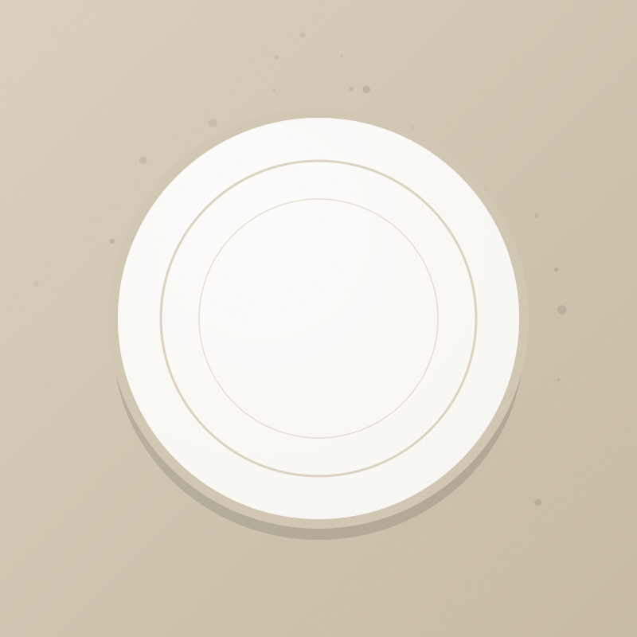
Фото готовитсяХачапури по-мегрельски с молочным сулугуни
530 ₽Хачапури Пепперони
950 ₽Хачапури Горский Три сыра
990 ₽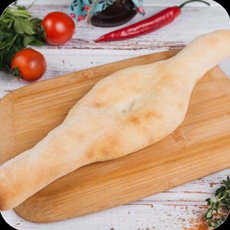
Пури
100 ₽Как нас найти
В двух шагах от воды
Ресторан Re Forel
- Адрес
- Москва, Малая Бронная, 00
Вход со двора, вывеска с форелью - Часы работы
- Пн–Чт 12:00 — 00:00
Пт–Вс 12:00 — 02:00 - Телефон
- +7 495 000-00-00
Адрес и телефон — заглушки для вёрстки.